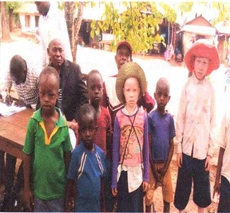

Our Projects and Activities
Since the inception of the Organization in August 2019, some activities have been undertaken using the organization members' contributions.
Community Awareness for People with Disabilities
Conducted community awareness rising to people with disabilities to build self-confidence and understanding for their rights. This also involved individual self-assessment to evaluate capacities, strengths, and weaknesses to find areas of intervention.


Good Governance (Voters' Education 2020 National Election)
Conducted awareness to the community about voters' education in the National Election of 2020 in Korogwe District, Tanga region.


Environmental Protection and Sanitation
Performed environmental protection and sanitation activities in parts of Korogwe District, including Manundu, Hale, and Makinyumbi–Miembeni.


Data Collection for People with Disabilities
Collected data from people with disabilities to determine how the organization can support them through donor funding.

The TATA organization is actively seeking and making efforts to access grants from internal and external donors for funding to continue ongoing activities and expand its reach. Several project proposals are available for potential donors interested in our thematic areas.